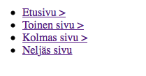

Luomamme murupolkuelementti näyttäisi nyt tältä:
Seuraavaksi aloitetaan murupolun muotoilu.
Ensimmäisenä siirretään kaikki murupolun alkiot vierekkäin ja poistetaan tekstin muotoilut ja asetetaan ne näkymään kuten <p> -elementti.
.murut {
display: block;
}
.murut li {
display: inline;
text-decoration: none;
}
Seuraavaksi käydään itse murualkioiden kimppuun. Määritellään fontille väri, poistetaan taas kaikki tekstin muotoilut, jotta saadaan linkkien alleviivaus pois, laitetaan hieman tilaa alkioiden väliin ja määritellään fonttikoko.
.murut li a {
font-size: 14px;
padding: 7px 6px 7px 0px;
text-decoration: none;
color: #137A7F;
}